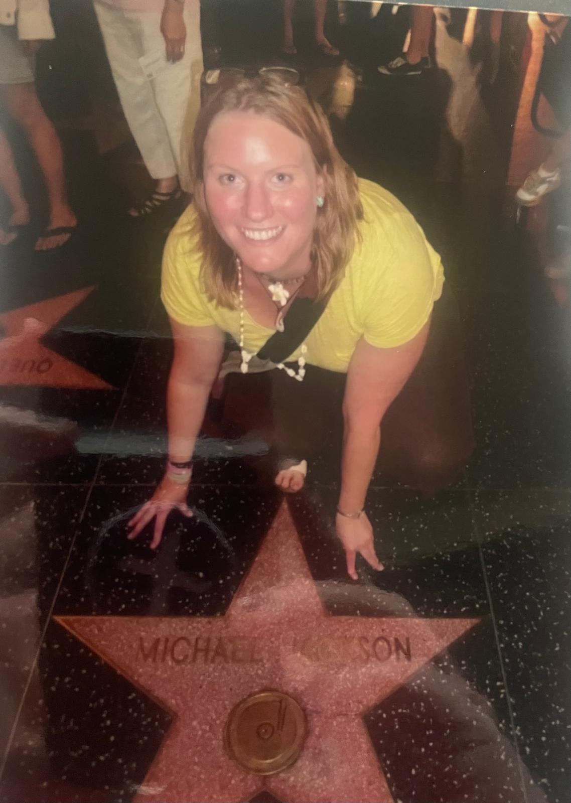
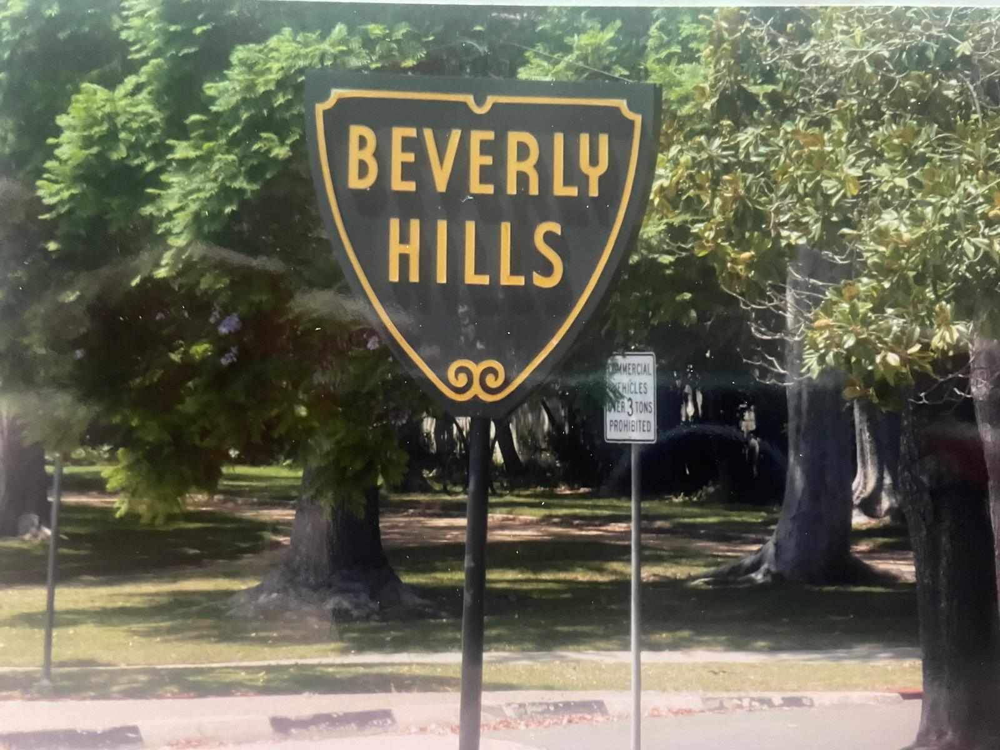
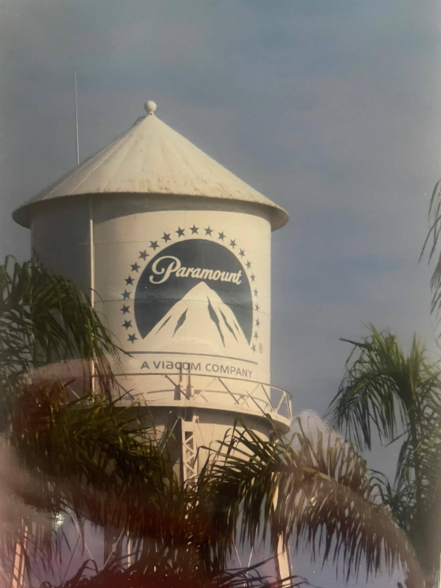
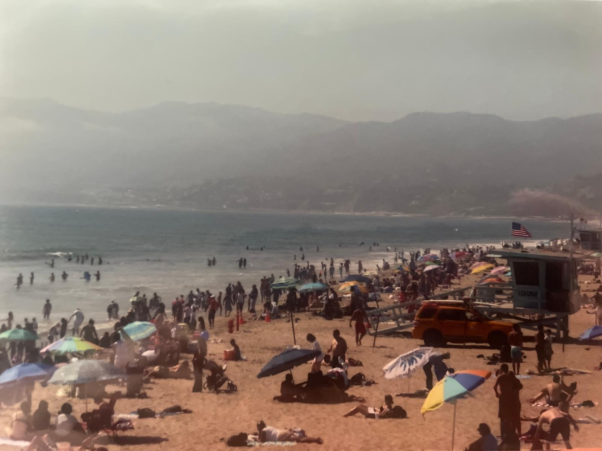
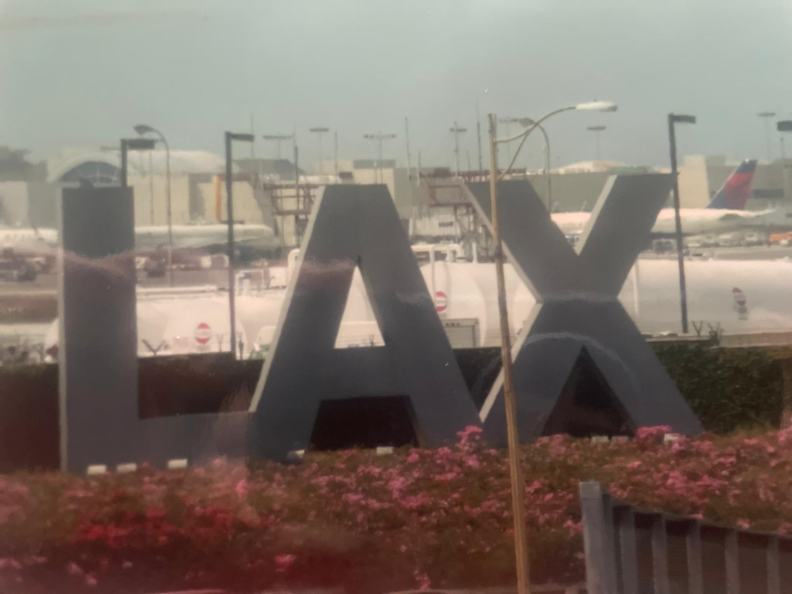
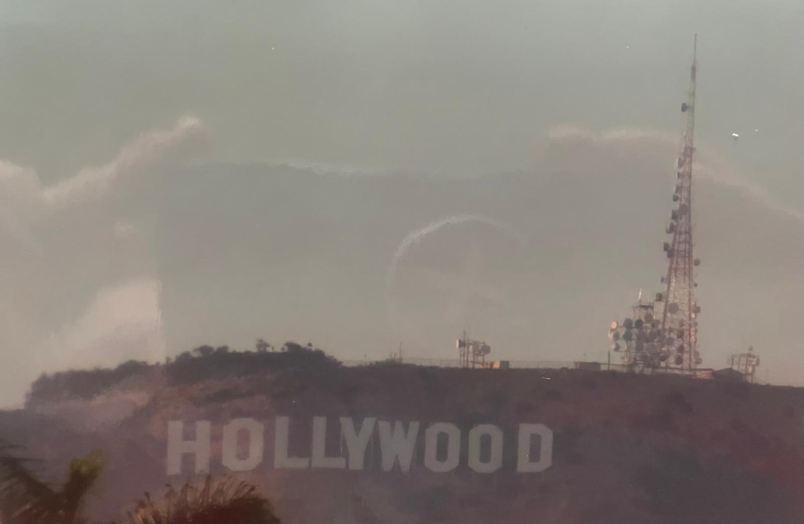

We stopped in Los Angeles for three nights on our way home from Hawaii — and LA absolutely did not disappoint. The Hollywood Walk of Fame, the Warner Bros. studio tour, Beverly Hills and Rodeo Drive, Santa Monica Pier, Venice Beach, cycling along the Pacific, Griffith Observatory and Sunset Boulevard. Three nights, one city, and more memories than most trips twice as long.






We landed in LA straight from Hawaii, which is frankly one of the great ways to arrive in a city. Sun-kissed, still buzzing from the islands and suddenly in the middle of one of the most famous cities on earth. Los Angeles hits you immediately — the scale of it, the sunshine, the palm trees lining every boulevard, the sheer glamour of the place.
Three nights is tight for a city this size but we packed it in properly. Hollywood and Beverly Hills one day, the Warner Bros. studio tour and Griffith Observatory the next, Santa Monica and Venice Beach the third. By the time we boarded the flight home to Dublin we were exhausted, sunburned and absolutely buzzing. LA is brilliant, pure and simple.
Hollywood Boulevard is exactly as iconic as you imagine — and it delivers completely. The Hollywood Walk of Fame stretches along the boulevard with over 2,700 stars embedded in the pavement, and spotting your favourites is genuinely brilliant fun. We spent a good while hunting down names and taking photos before we even made it to the end of the block.
The TCL Chinese Theatre — with its famous forecourt of celebrity handprints and footprints preserved in concrete — is one of those places that is impossible not to be charmed by. Seeing how small some of the stars' hands are in person is always a surprise. Just across the street, the Dolby Theatre — home of the Academy Awards — is genuinely thrilling to stand outside. Knowing that this is where the Oscars happen every year gives the whole stretch of Hollywood Boulevard a special kind of energy.
Sunset Boulevard is a must — drive or walk it in both directions if you can. The history embedded in every block of that road is extraordinary, from the old studio lots to the legendary clubs and hotels. Old Hollywood feels very alive here.
Beverly Hills is everything the films promised and then some. Rodeo Drive is one of the most glamorous streets on earth — even if you're not shopping, strolling past the boutiques and absorbing the extraordinary wealth on display is a quintessential LA experience. The architecture, the immaculate gardens, the cars — it's the real-life backdrop of a hundred films and it is genuinely stunning.
The celebrity homes tour by bus through the Hollywood Hills and Beverly Hills is brilliant fun — a knowledgeable guide points out mansion after mansion belonging to people you've grown up watching on screen. Some are behind gates you'd never get past on your own; from the bus you get views that are otherwise impossible. Excellent entertainment and a genuinely fascinating insight into how the other half live.
The Warner Bros. studio tour was one of the highlights of the entire trip — an extraordinary behind-the-scenes look at one of the world's most famous film studios. You walk through actual working soundstages, see iconic sets and props from productions you've grown up watching, and get a genuine sense of the extraordinary scale of what it takes to make Hollywood films and TV shows.
The detail and history at every turn is fascinating — from wardrobe departments to prop stores to the backlot streets that have been the backdrop for countless productions. If you grew up watching American TV and film, this tour will absolutely delight you. Book well in advance — it sells out regularly, especially at weekends.
The Griffith Observatory sits high in the Hollywood Hills with the most extraordinary views over Los Angeles — the city spreads out below you all the way to the Pacific horizon, and on a clear day the scale of it is genuinely breath-taking. It's free to visit and the hike up through Griffith Park adds a brilliant hour to the experience.
From the Observatory you get some of the best views of the Hollywood Sign — iconic, enormous and somehow even more thrilling to see in person than in a thousand photographs. At sunset the whole scene — the sign, the hills, the city below — turns extraordinary shades of orange and gold. One of the great views in America.
The Santa Monica Pier is one of the most iconic images in all of California — the Ferris wheel, the Pacific Park amusement rides, the wide golden beach stretching in both directions and the Pacific Ocean glittering beyond. Walking out to the end of the pier and watching the sun drop towards the water is one of those perfect LA moments that you carry home with you.
Cycling along the beachfront from Santa Monica down to Venice Beach is an absolute must — the cycle path runs right along the sand with the ocean to one side and the colourful beach culture of LA on the other. It's one of the great urban cycle routes in the world and the couple of miles between the two beaches fly by in the sunshine.
Venice Beach is extraordinary — chaotic, colourful, loud and brilliant. Street performers, Muscle Beach where people are actually working out in the open air, the famous skate park, artists selling work on the boardwalk, food stalls, souvenir shops and an energy completely unlike anywhere else in LA. The sunset from the Venice Beach boardwalk over the Pacific is genuinely one of the most beautiful things we saw on the entire trip.
Walking through working soundstages, iconic sets and the prop stores of one of Hollywood's greatest studios. A must for anyone who grew up on American film and TV. Book early — it sells out.
Over 2,700 stars on the pavement, the TCL Chinese Theatre handprints, the Dolby Theatre — Hollywood Boulevard is iconic and it absolutely delivers. Free, fun and unmissable.
The city spread to the horizon, the Hollywood Sign behind you, the sky turning gold and orange. The view from Griffith Observatory at sunset is one of the great views in all of America.
The beachfront cycle path from Santa Monica Pier to Venice Beach with the Pacific on one side and the whole colourful spectacle of LA beach life on the other. One of the great urban cycle routes anywhere.
The most glamorous street on earth — even window shopping is extraordinary. The Beverly Hills sign photo is obligatory. The celebrity homes tour through the Hills is brilliant fun.
Walking to the end of the pier as the sun drops towards the Pacific is one of those perfect LA moments that stays with you. The Ferris wheel, the beach, the ocean — picture perfect.
Los Angeles is one of those cities where a guided tour — especially on day one — makes an enormous difference. A good Hollywood and Beverly Hills tour in the morning gets you oriented, gives you context and takes the logistics out of your hands so you can just enjoy the city. TourRadar has brilliant LA options.
Disclosure: This is an affiliate link. If you book through it we may earn a small commission at no extra cost to you.
From Warner Bros. studio tours and Hollywood walking tours to celebrity homes bus trips, Santa Monica bike rentals and Griffith Observatory guided visits — book your LA experiences in advance.
Disclosure: If you book through this link we may earn a small commission at no extra cost to you.
Klook is great for booking individual LA experiences — studio tours, Hollywood tours, bike rentals and day trip options from the city.
Disclosure: This is an affiliate link. If you book through it we may earn a small commission at no extra cost to you.
Common questions
What to pack for LA
LA means sunshine, long days, a lot of walking and a lot of time outdoors. These are the things we'd pack without hesitation.
Stay connected across LA for maps, Ubers and bookings without roaming charges.
View on Amazon →The California sun is strong — especially on the beach and cycling the waterfront. Essential.
View on Amazon →Hollywood Boulevard, Venice Beach boardwalk, Griffith Park hike — you will walk enormous distances.
View on Amazon →Long days out — your phone battery won't survive without a backup. Essential for maps and photos.
View on Amazon →USA plugs differ from Ireland — a universal adaptor covers all your devices.
View on Amazon →Non-negotiable in LA. The California sunshine is relentless — good sunglasses are essential all day, every day.
View on Amazon →Disclosure: These are Amazon affiliate links. If you buy through them we may earn a small commission at no extra cost to you.
LA was part of a longer adventure through America and the Pacific. Check out our other USA guides below.
Big Island, Oahu, Maui & Kauai — where we came from before LA. Volcanoes, shark cage diving and the Nā Pali Coast.
Read the Hawaii guide →4,000km through 14 states — Nashville, Graceland, New Orleans, the Smoky Mountains and the Everglades.
Read the Deep South guide →Dog sledding in Juneau, bear watching at Icy Strait Point and the Hubbard Glacier.
Read the Alaska guide →Browse LA tours on TourRadar, book your activities on GetYourGuide or Klook — and get out to Hollywood. Los Angeles is one of those cities that delivers every single time.
Affiliate disclosure: if you book through our links we may earn a small commission at no cost to you. We only recommend experiences we've done ourselves.